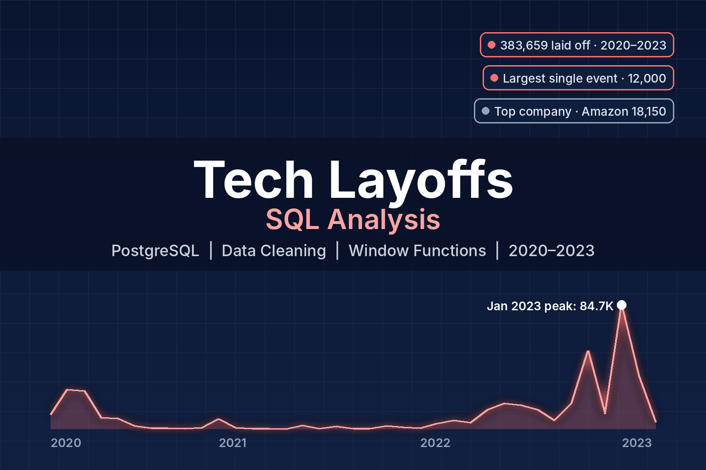

Purpose
Analyze global tech layoffs using SQL to understand which companies, industries, and countries were most affected.
The project demonstrates how SQL can transform raw workforce data into clear insights about industry trends and economic shifts.
Tools
SQL | PostgreSQL | VS Code | Data Cleaning + EDA
Summary
This project analyzes global tech layoffs using SQL by cleaning raw datasets and performing exploratory analysis to uncover workforce trends.
The analysis explores which companies led layoffs, which industries were most impacted, where layoffs occurred geographically, and how layoffs evolved over time.
Process
- Cleaned the dataset by removing duplicate rows and standardizing company, industry, and country fields.
- Converted text values into numeric and date formats and created a clean analytical table called fact_layoffs.
- Aggregated layoffs by company to identify organizations responsible for the largest workforce reductions.
- Analyzed layoffs by industry and country to determine which sectors and regions were most affected.
- Used time-based analysis and window functions to track how layoffs evolved month-by-month and rank companies by layoffs each year.
Key Insights
- The largest single layoff event involved 12,000 employees, showing the scale of workforce reductions during downturns.
- Major tech companies such as Amazon, Meta, Google, and Microsoft appeared among the largest layoffs.
- The Consumer, Retail, and Transportation industries experienced the highest workforce reductions.
- Layoffs surged dramatically during late 2022 and early 2023, indicating a major industry correction.
- The United States accounted for the largest share of layoffs due to the concentration of global tech companies.
Outcome
Built a SQL-based analytical workflow that converts raw layoff data into clear insights about industry disruption, workforce reductions, and economic trends within the technology sector.
Project Links